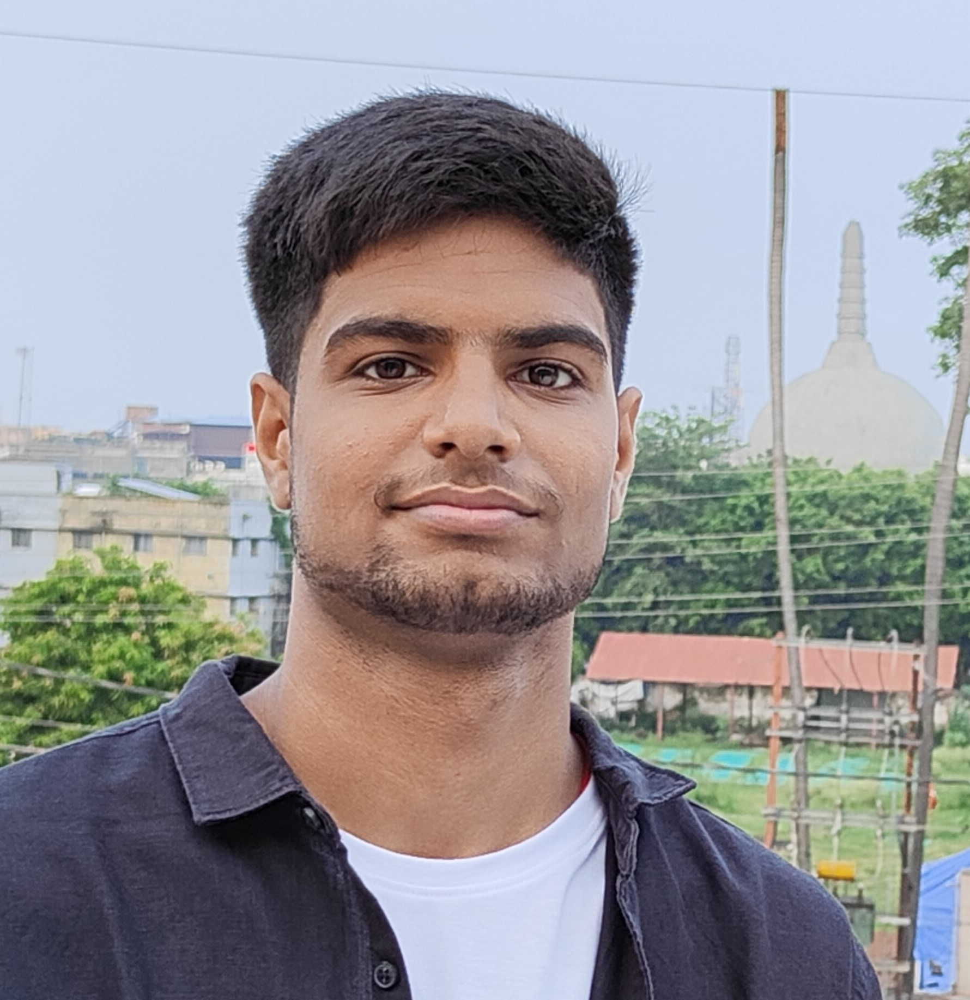

Shashwat Kumar

Email| Phone| LinkedIn
Education
Indian Institute of Information Technology, Senapati Manipur (IIIT SM), India 2022 - 2026
CSE with Specialization in AI | CGPA: 8.49 (till 2nd sem)
Sunshine Residential Public School, Patna BIhar, India 2016 - 2017
AISSCE (Class XII), Aggregate: 91
D.A.V. Public School, Gaya Bihar, India 2014 - 2015
AISSE (Class X), Aggregate: 92
Skills
C++ | C | HTML | CSS | JavaScript | DSA
Work Experience
IIITians Network | Web Content Editor Apr 23 - Present
- Collaborated with a dynamic team to curate, create, and manage high-quality web content for IIITians Network, ensuring a seamless and engaging user experience.
- Produced captivating captions and headlines that resonated with the target audience, effectively promoting the brand and its core values.
Projects
Auto Meet Joiner AI Sept 23
- Developed an innovative AI-powered software solution for automating the process of joining virtual meetings, including Google Meet, Team meetings, and Zoom, making remote work more efficient and hassle-free.
- Created a scheduling algorithm that interfaces with users' data to autonomously join meetings at the specified time, eliminating the need for manual intervention.
- Mic and Camera Management: Implemented a feature that intelligently mutes the microphone and disables the camera upon joining meetings, enhancing privacy and minimizing distractions.
Docseva Oct 23
- Designed and developed "DocSeva," a web application aimed at optimizing the availability of doctors in hospitals (currently implementing) by providing real-time information on their active status and enabling patients to book appointments seamlessly.
- Implemented a feature that allows hospitals to update and display the real-time availability status of doctors, reducing patient wait times and improving overall healthcare service delivery.
- Created an intuitive interface for patients to search for available doctors, select convenient time slots, and book appointments online, streamlining the appointment scheduling process.
Positions of Responsibility
GDSC IIIT SM (Google Developer Student Clubs) | Content Lead Dec 22 - Jul 23
- Developed and executed content strategies for GDSC IIIT SM, aligning web content with the club's goals and values.
- Managed a team of content creators responsible for producing high-quality web content.
Coding Club IIIT SM | Co-Lead Sep 23 - Present
- Spearheaded and organized hackathon events for club members, providing them with opportunities to enhance their coding skills and engage in creative problem-solving.